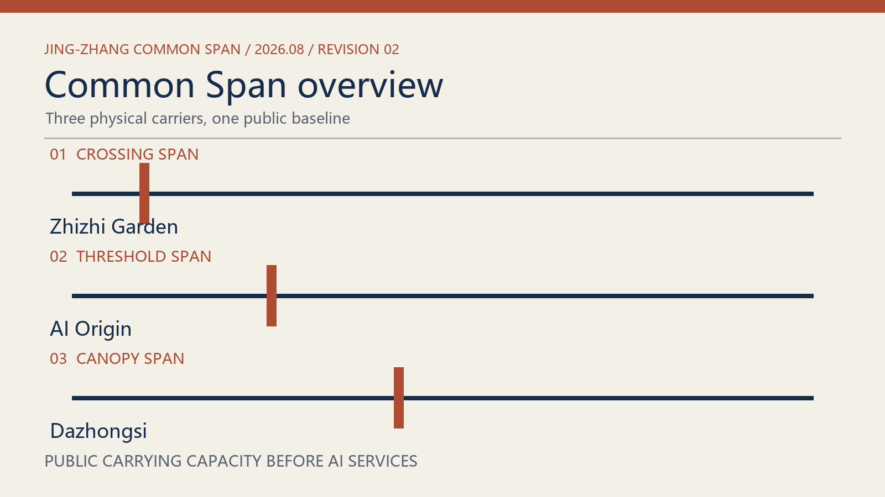
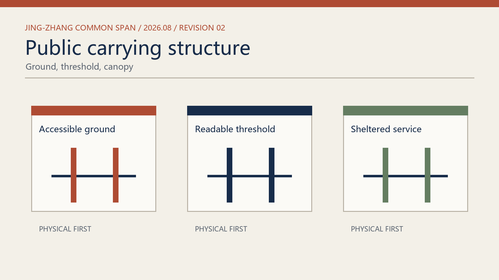
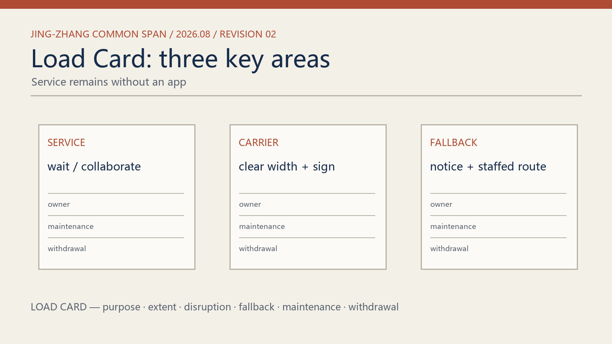
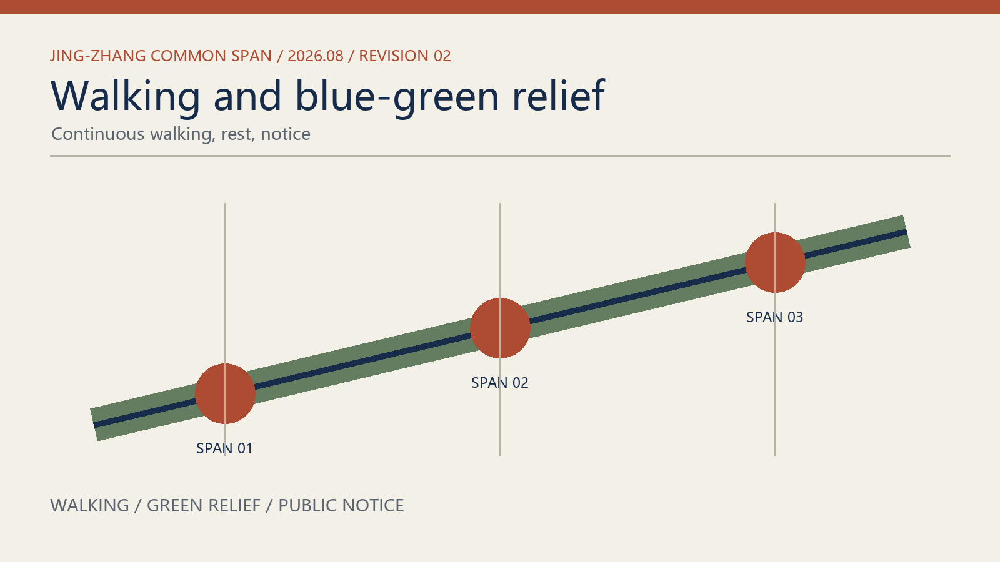
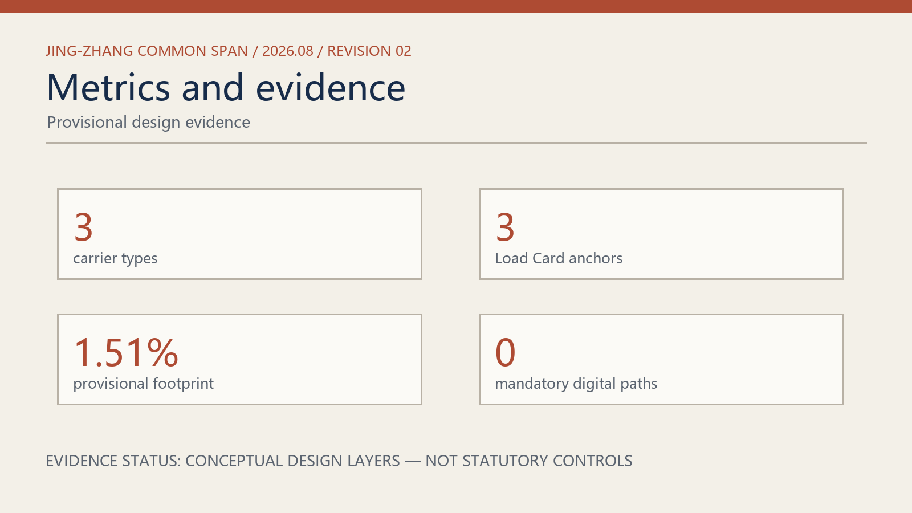

JING-ZHANG COMMON SPAN · 2026
Jing-Zhang Common Span
Public carrying capacity comes before AI services. Crossing, threshold, and canopy spans keep mobility, inquiry, rest, and maintenance visible, usable, and repairable when digital systems pause.
Three carrier types




